Highlighted author(s): Ehud Altman
Authors: Yi-Cheng Wang, Samuel J. Garratt, Ehud Altman
Type: theory · Category: numerical methods · PDF: https://arxiv.org/pdf/2605.04026v1
Analysis basis: full PDF text, analyzed in chunks
Topic relevance: 🔥 entanglement & information structure 4/5 · driven-dissipative phase transition 3/5 · measurement-induced transitions 3/5 · methods for driven-dissipative 3/5 · non-equilibrium dynamics 3/5 · non-equilibrium universality 2/5
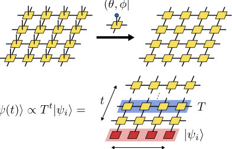
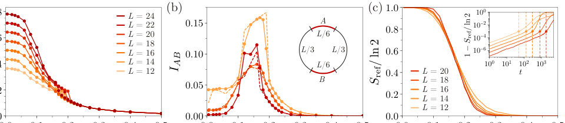
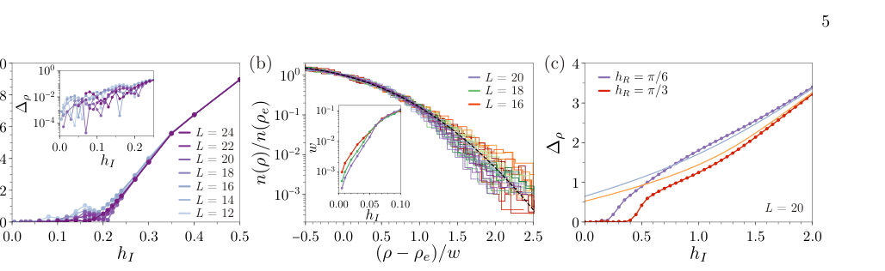
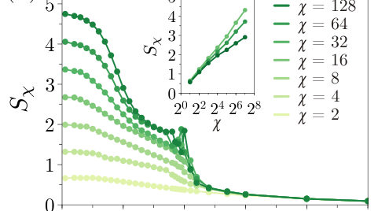
Summary. The paper identifies a phase transition in the entanglement scaling of 2D translation-invariant tensor networks driven by non-unitarity. It connects the computational cost of network contraction to the spectral properties of the transfer matrix, specifically showing how a dense ring of eigenvalues in the volume-law phase gives way to a spectral gap in the area-law phase.
Why it may be interesting. This work is highly relevant for many-body dynamics and open quantum systems as it links the complexity of classical tensor network contraction to fundamental physical phenomena like entanglement transitions and non-unitary purification dynamics.
Main problem. Investigating the complexity of contracting translation-invariant 2D tensor networks and identifying the transition between volume-law and area-law entanglement in boundary states.
Main result. The authors discover a transition from a volume-law to an area-law entanglement phase driven by non-unitarity, characterized by a spectral transition in the transfer matrix from a dense ring of eigenvalues to a distinct leading eigenvalue.
Method. Numerical simulations of row-state evolution, Matrix Product State (MPS) approximations, transfer matrix spectral analysis, and comparison with Random Matrix Theory (RMT) and mean-field theory.
Model / system. A 2D cluster state on a square lattice with periodic boundary conditions, modeled as a non-unitary version of the kicked Ising model where the transfer matrix acts as a 1D time evolution operator.
Key observables. Half-chain entanglement entropy, antipodal mutual information, purification time, radial eigenvalue density, and the spectral gap of the transfer matrix.
Important parameters / regimes. Non-unitary field strength (h_I), real field (h_R), and interaction strength (J).
Assumptions / limitations. The study focuses on translation-invariant networks, though results are tested for robustness against spatial disorder.
Figures summary. Figure 1 shows the tensor network contraction schematic; Figure 2 displays the entanglement entropy and mutual information transitions; Figure 3 illustrates the transfer matrix spectral gap and eigenvalue density scaling; Figure 4 discusses computational tractability via bond dimension scaling.
Paper structure. The paper introduces the tensor network contraction problem, describes the non-unitary kicked Ising model, presents numerical results for entanglement and purification transitions, analyzes the spectral properties of the transfer matrix, tests the universality/robustness of the results, and concludes with implications for computational complexity.
We study the complexity of approximately contracting translation-invariant tensor networks. The computational cost of row-by-row tensor network contraction, which defines a discrete time evolution governed by a fixed transfer matrix, is associated with the entanglement of the state of a row. By analyzing a family of tensor networks whose transfer matrices interpolate between chaotic Floquet and strongly non-unitary limits, we uncover a transition between volume- and area-law entanglement in states evolved under the transfer matrix. We show that deep in the volume-law phase the spectrum of the transfer matrix in the complex plane consists of a dense ring with a sharp outer edge, reminiscent of behavior identified for non-unitary random matrices. At late times an evolving row state therefore has significant contributions from many eigenvectors with nearly degenerate eigenvalue magnitudes. In the area-law phase, there is instead a distinct leading eigenvalue. Our results establish connections between contraction complexity, spectral properties of the transfer matrix, and purification under non-unitary dynamics.
Highlighted author(s): Nicolò Defenu
Authors: Andrea Solfanelli, Augusto Smerzi, Peter Zoller, Nicolò Defenu
Type: theory · Category: other · PDF: https://arxiv.org/pdf/2605.03032v1
Analysis basis: full PDF text, analyzed in chunks
Topic relevance: Keldysh / 2PI / non-Gaussian methods 3/5 · Rydberg arrays 3/5 · analog quantum simulation 3/5 · non-equilibrium universality 3/5 · entanglement & information structure 2/5 · exotic spin models in light-matter 2/5 · non-equilibrium dynamics 2/5
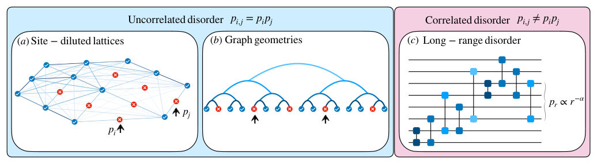
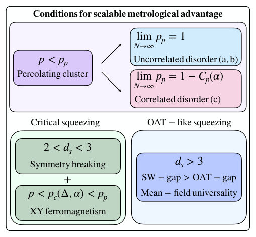
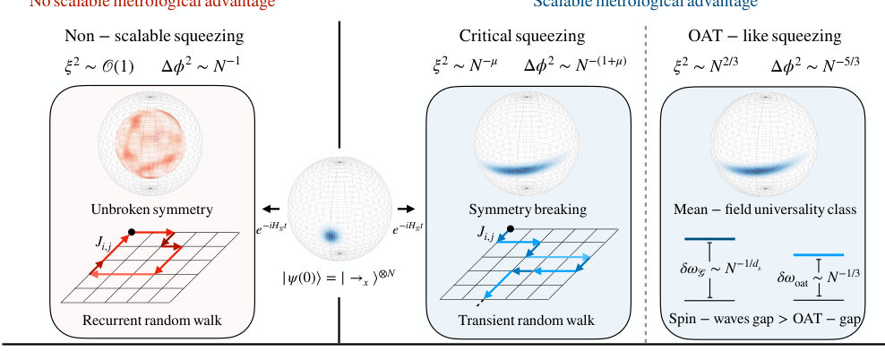
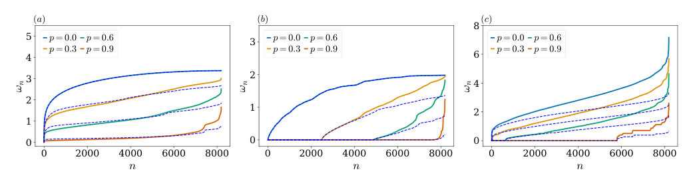
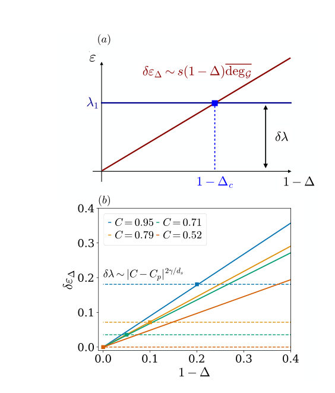
Summary. This paper establishes how the geometry and disorder of a quantum network determine the possibility of scalable spin squeezing. It identifies that squeezing can occur via two different mechanisms depending on the network's spectral dimension. The findings offer a guide for engineering robust quantum sensors using platforms like Rydberg arrays or trapped ions.
Why it may be interesting. It provides a unifying theoretical framework for designing scalable quantum sensors by linking quantum metrology to fundamental concepts like graph universality, spectral dimension, and percolation theory.
Main problem. Determining the necessary and sufficient conditions for achieving scalable spin squeezing in interacting spin ensembles embedded in arbitrary, inhomogeneous, and disordered network geometries.
Main result. The study identifies two distinct squeezing regimes (OAT-like and critical) governed by the spectral dimension of the network, and establishes that the scaling of the spin-squeezing critical point arises from the interplay between XY-ferromagnetic and percolation universality.
Method. The authors use a generalized rotor/spin-wave theory based on the graph Laplacian, linear spin-wave theory, and the Discrete Truncated Wigner Approximation (DTWA) to analyze the dynamics.
Model / system. The model is the XXZ Hamiltonian on generic graphs and networks, including site-diluted lattices and engineered geometries, applicable to platforms like trapped ions, Rydberg atom arrays, and ultracold molecules.
Key observables. Spin-squeezing parameter (xi^2), phase sensitivity, transverse variances, and collective magnetization.
Important parameters / regimes. Spectral dimension (ds), interaction exponent (alpha), anisotropy (Delta), dilution probability (p), and the percolation threshold (pp).
Assumptions / limitations. The analysis utilizes the rotor/spin-wave approximation and assumes the dominance of isolated dimers near the percolation transition for certain scaling derivations.
Figures summary. Figure 1 shows different classes of inhomogeneous systems; Figure 2 presents a hierarchy of conditions for metrological advantage; Figure 3 relates spectral dimension to random walk properties; Figure 4 compares spin-wave spectra via exact diagonalization versus graph approximations; Figure 9 shows spin-squeezing dynamics.
Paper structure. The paper introduces the problem of squeezing in networks, develops a low-energy theory using the graph Laplacian, identifies two metrological regimes based on spectral dimension, analyzes scaling near the percolation threshold, and applies the framework to experimental platforms.
We establish the conditions under which scalable spin squeezing can be achieved in interacting spin ensembles embedded in arbitrary, inhomogeneous network geometries. We identify two different forms of squeezing: OAT-like scalable squeezing is governed solely by the universal properties of the interaction graph and is controlled by its spectral dimension. In critical squeezing, on the other hand, the value of the spectral dimension only furnishes the necessary condition for scalable metrological gain, while the sufficient condition requires the model to lie below the symmetry breaking transition. Therefore, in quantum networks, the scaling of the spin-squeezing critical point emerges from a nontrivial interplay between xy-ferromagnetic universality and percolation universality. We apply this general theoretical framework to several experimental scenarios and discuss sharp and experimentally relevant conditions for achieving robust metrological gain on generic inhomogeneous structures, giving a unifying perspective for designing scalable quantum sensors across diverse quantum simulation platforms.
Highlighted author(s): Andrew Lucas
Authors: Jack H. Farrell, Andrew Lucas
Type: theory · Category: strongly correlated electrons · PDF: https://arxiv.org/pdf/2605.03030v1
Analysis basis: full PDF text, analyzed in chunks
Topic relevance: non-equilibrium dynamics 2/5
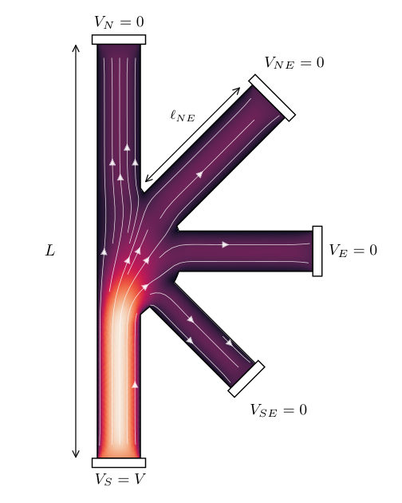
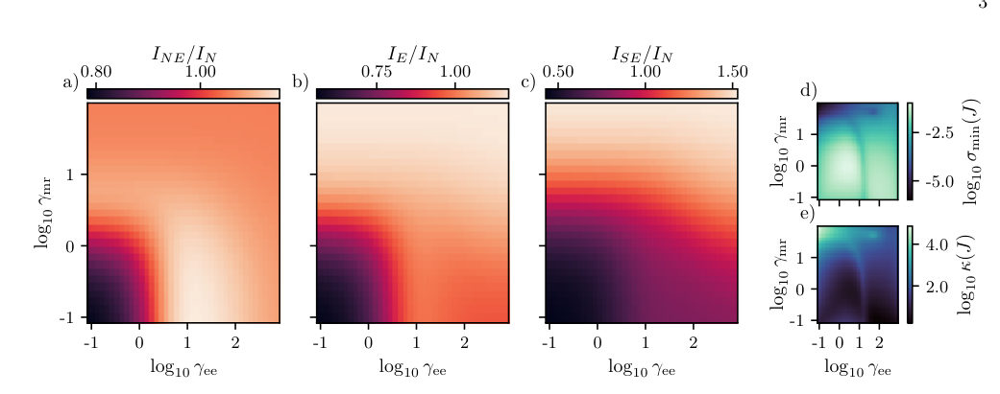
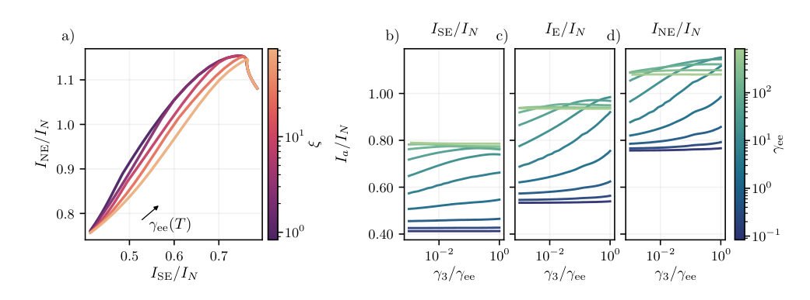
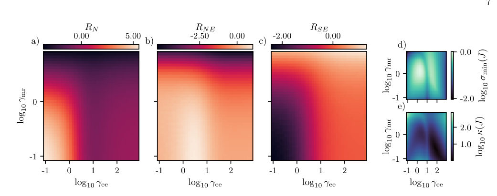
Summary. This paper proposes a method to characterize electronic transport regimes and scattering rates in 2D materials using simple multi-terminal resistance measurements. By analyzing how current splits between different contacts, researchers can distinguish between ballistic, hydrodynamic, and diffusive flow without needing complex imaging techniques. This provides a robust way to study electron liquids and identify the onset of the tomographic regime.
Why it may be interesting. not directly relevant
Main problem. The difficulty of quantitatively distinguishing between various electronic transport regimes (ballistic, hydrodynamic, tomographic, and diffusive) and extracting microscopic scattering rates without using space-resolved imaging.
Main result. A five-terminal 'fan' geometry allows for the extraction of momentum-relaxing and momentum-conserving scattering rates through current partition measurements, providing a simpler alternative to imaging.
Method. Numerical solution of the linearized Boltzmann transport equation using the FermiSea.jl framework and a spectral method with harmonic truncation.
Model / system. Electrons in clean, two-dimensional (2D) conductors modeled as an isotropic Fermi liquid near T = 0.
Key observables. Current partition (branching ratios) among drain contacts, specifically the fractions I_a/I_N, and nonlocal resistances.
Important parameters / regimes. Momentum-relaxing scattering rate (gamma_mr), momentum-conserving electron-electron scattering rate (gamma_ee), and the parameter gamma_3 for higher-order mode relaxation.
Assumptions / limitations. Focuses on the T -> 0 limit, assumes an isotropic Fermi liquid, and primarily assumes purely diffuse boundary conditions.
Figures summary. Fig 1 shows the device geometry and current density; Fig 2 displays heatmaps of current fractions as functions of scattering rates and Jacobian diagnostics; Fig 4 shows nonlocal resistance and sensitivity/condition number analysis.
Paper structure. The paper introduces the problem of transport regime identification, describes the five-terminal device geometry and the Boltzmann modeling approach, presents results for regime differentiation and parameter extraction, and concludes with a discussion on the sensitivity of the inverse problem.
Strongly interacting electrons in clean two-dimensional devices are theorized to exhibit many distinct transport regimes, such as ballistic, hydrodynamic, or diffusive. Realistic samples often lie in crossover regimes between these idealized limits. We show how a single experiment on a multiterminal device can distinguish these regimes and constrain the relevant scattering rates without space-resolved imaging. Using a linearized Boltzmann model in a five-terminal geometry, we find that current partition among the drain contacts diagnoses the ballistic-hydrodynamic-Ohmic crossover and allows extraction of momentum-relaxing and momentum-conserving scattering rates in the crossover regime. The same geometry also exhibits clear signatures of the tomographic regime, potentially allowing for a quantitative discrimination between viscous and tomographic flow in experiments. Our results demonstrate that multiterminal devices are a simpler experimental route to characterize transport regimes in electron liquids, relative to space-resolved imaging experiments.
Authors: Tariq Zeyad Jawad
Type: theory · Category: quantum information and computing · PDF: https://arxiv.org/pdf/2605.04042v1
Analysis basis: full PDF text, analyzed in chunks
Topic relevance: 🔥 Tavis-Cummings & cavity-many-emitter 5/5 · 🔥 Dicke superradiance 4/5 · 🔥 correlated / nonlocal dissipation 4/5 · methods for driven-dissipative 3/5 · Keldysh / 2PI / non-Gaussian methods 2/5 · correlated cavity matter 2/5 · entanglement & information structure 2/5 · non-equilibrium dynamics 2/5 · superradiant laser 1/5
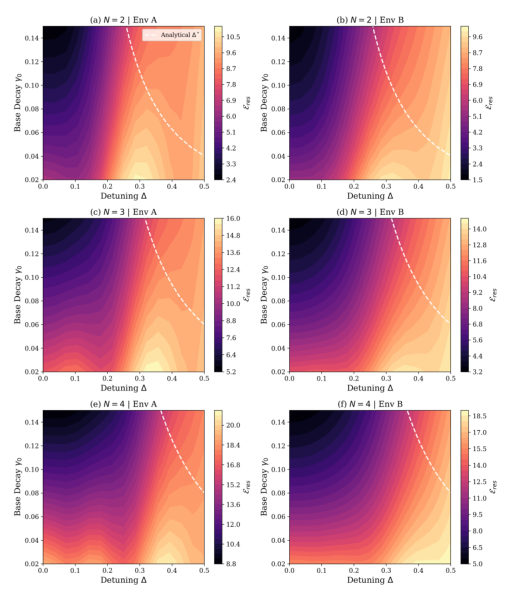
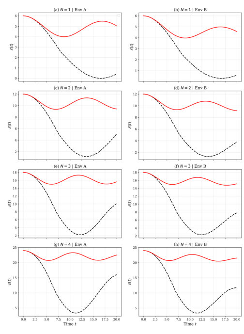
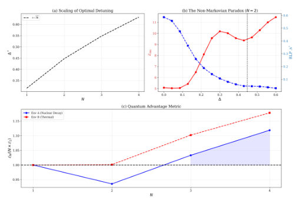
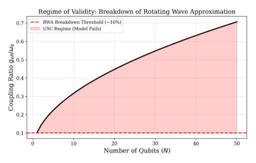
Summary. This paper demonstrates that tuning the frequency of a cavity can protect the extractable energy in a collective quantum battery from environmental noise. It reveals that protecting quantum coherence is more important than relying on environmental memory and provides a scaling law for optimal protection as the number of qubits increases.
Why it may be interesting. It provides a practical, passive control mechanism (detuning) to mitigate superradiant decay in many-body quantum systems and offers a counter-intuitive insight into the role of non-Markovianity in quantum thermodynamics.
Main problem. How to protect the extractable work (ergotropy) in collective quantum batteries from energy loss caused by superradiant decay and environmental decoherence.
Main result. A passive cavity detuning strategy is proposed that spectrally isolates the system, achieving up to 1088% ergotropy improvement and resolving a 'non-Markovian paradox' by showing that suppressing environmental memory preserves coherence.
Method. Analytical derivation using the Nakajima-Zwanzig projection operator and TCL2 approximation, complemented by numerical simulations using the QuTiP framework.
Model / system. A collective quantum battery consisting of N identical two-level systems interacting with a single electromagnetic mode in a bosonic cavity, described by an extended T-Cummings model subject to superradiant decay.
Key observables. Ergotropy (E), BLP non-Markovianity measure (N), Collective Quantum Advantage (A), and effective decay rate.
Important parameters / regimes. Number of qubits (N), coupling strength (g), cavity detuning (Delta), cavity decay rate (gamma_0), and noise types (Ohmic/RTN and Thermal).
Assumptions / limitations. The use of the Rotating Wave Approximation (RWA) and the validity of the TCL2 approximation, which may break down in the ultra-strong coupling regime.
Figures summary. Fig 1 shows ergotropy dynamics over time; Fig 2 presents ergotropy survival heatmaps; Fig 3 illustrates the scaling of optimal detuning, the non-Markovian paradox, and the quantum advantage metric.
Paper structure. The paper introduces the problem of ergotropy loss, derives an analytical optimal detuning strategy, explores the relationship between coherence and non-Markovianity, compares different noise environments, and establishes the limits of the model in the ultra-strong coupling regime.
This study investigates the performance and ergotropy protection of open collective quantum batteries subject to superradiant decay. By employing a passive spectral detuning strategy within an intermediate cavity, an optimal detuning value ($Δ^*$) is analytically derived and numerically verified to spectrally isolate the system and protect quantum coherence, achieving up to 1088% ergotropy improvement for single qubits and superextensive collective advantage for $N \ge 3$. Our analysis resolves a "non-Markovian paradox," revealing that maximizing ergotropy does not strictly require non-Markovian memory; rather, suppressing environmental memory via detuning optimally preserves coherence, which serves as the fundamental resource. Survival maps across different environments demonstrate that thermal noise dissipates coherence more severely than telegraph noise. Finally, we establish that collective amplification of the effective coupling ($g_{\rm eff} = g\sqrt{N})$ inevitably drives large qubit arrays into the ultra-strong coupling regime, providing a quantitative ceiling $N_{\rm max}$ on the validity of the Tavis-Cummings description and the current ergotropy protection protocol.
Authors: Sascha Gehrmann, Fabian H. L. Essler
Type: theory · Category: numerical methods · PDF: https://arxiv.org/pdf/2605.03020v1
Analysis basis: full PDF text, analyzed in chunks
Topic relevance: 🔥 scars & prethermalization 5/5 · entanglement & information structure 3/5 · non-equilibrium dynamics 3/5
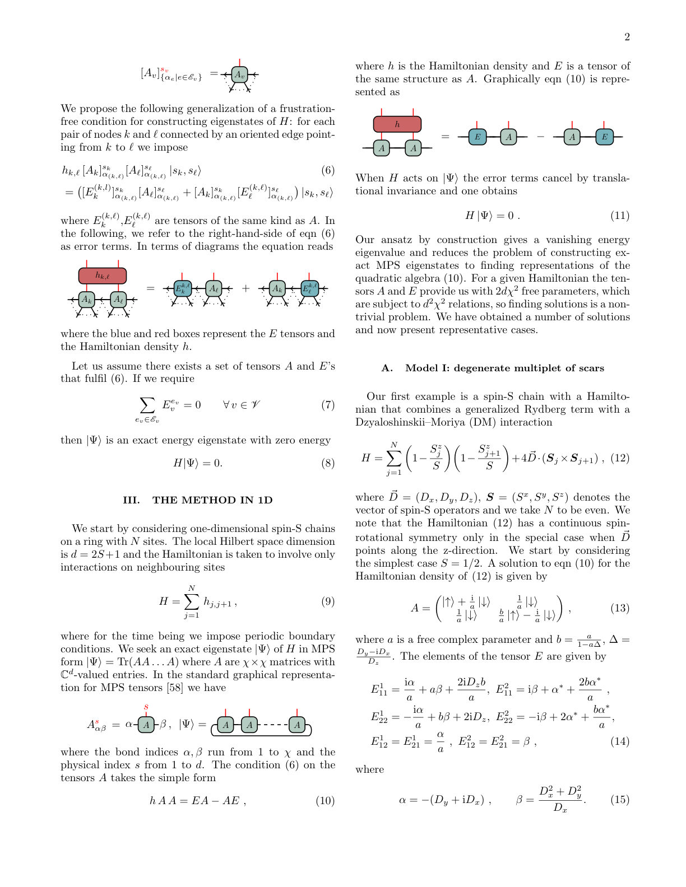
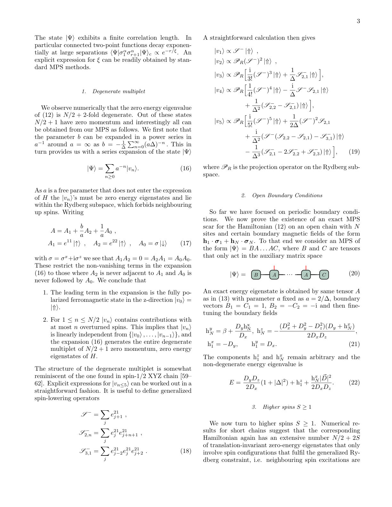
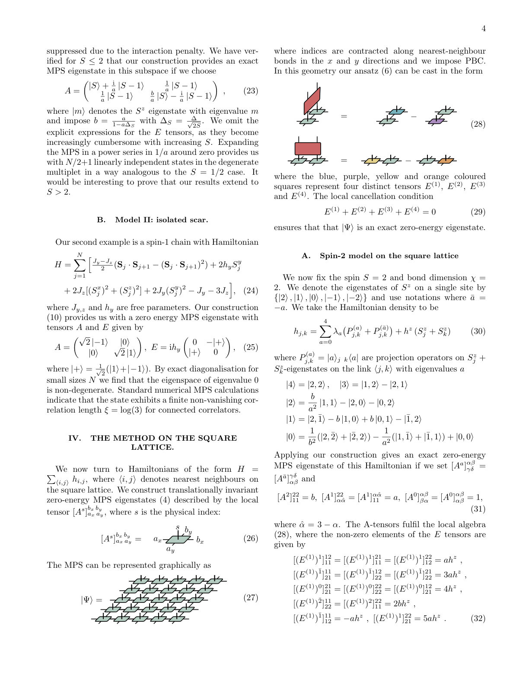
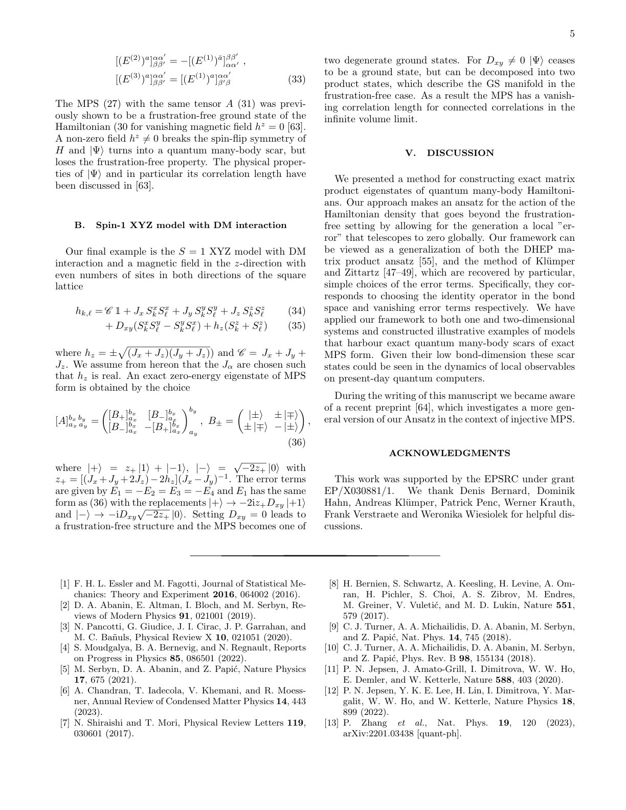
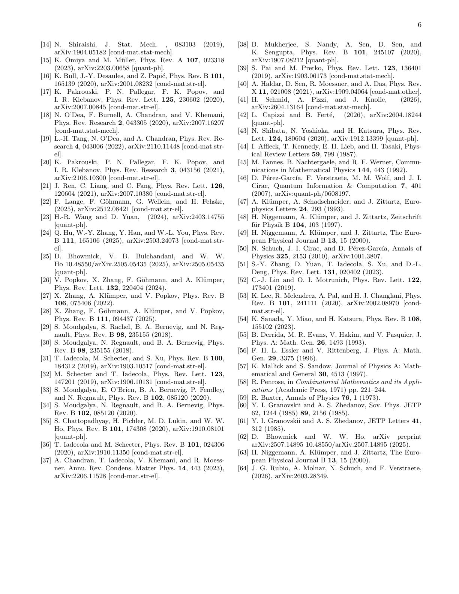
Summary. This paper presents a new mathematical framework to find exact Matrix Product State eigenstates for Hamiltonians that are not frustration-free. By using a local error cancellation technique, the authors demonstrate how to construct quantum many-body scars in 1D and 2D spin systems. This expands the toolkit for studying non-thermalizing quantum dynamics.
Why it may be interesting. The discovery of exact, low-entanglement eigenstates (scars) in non-frustration-free systems provides a powerful tool for studying non-thermal dynamics and offers states that are potentially observable on near-term quantum computers.
Main problem. Developing a general method to construct exact Matrix Product State (MPS) eigenstates for quantum many-body systems where the Hamiltonian is not frustration-free.
Main result. The authors successfully constructed exact zero-energy MPS eigenstates (quantum many-body scars) in both 1D and 2D by using a local error cancellation ansatz.
Method. A generalized Matrix Product Ansatz (MPA) based on a local error cancellation condition, inspired by the DEHP method for the ASEP, which reduces the problem to finding representations of a quadratic algebra.
Model / system. The study covers various models including 1D spin-S chains with Dzyalimoshinskii-Moriya interactions, 1D spin-1 chains, and 2D square lattice models (spin-2 and spin-1 XYZ models).
Key observables. Energy eigenvalues (specifically zero-energy states), two-point correlation functions, and correlation length.
Important parameters / regimes. Spin magnitude S, Dzyaloshinskii-Moriya interaction components (Dx, Dy, Dz), magnetic field strengths (hz, hy), and a complex parameter 'a' used in the expansion.
Assumptions / limitations. The construction relies on the existence of a local error cancellation mechanism and translational invariance; the method is demonstrated for specific fine-tuned boundary conditions in open chains.
Paper structure. The paper introduces a generalized DEHP-based ansatz, applies it to 1D spin chains (Model I and II), extends the construction to 2D square lattice models, and discusses the implications for quantum many-body scars and computational utility.
We construct exact eigenstates of quantum many-body systems with Hamiltonians that are not frustration-free in matrix product form, based on a local error cancellation ansatz motivated by the Derrida-Evans-Hakim-Pasquier method for finding the stationary state of the asymmetric simple exclusion process. We demonstrate the approach with explicit examples in both one and two spatial dimensions.
Authors: Ahmed M. Farouk, Ilya I. Beterov, Ghadeer Suliman, Junxi Chen, Igor I. Ryabtsev
Type: theory · Category: other · PDF: https://arxiv.org/pdf/2605.03579v1
Analysis basis: full PDF text, analyzed in chunks
Topic relevance: 🔥 Rydberg arrays 4/5 · 🔥 analog quantum simulation 4/5 · 🔥 entanglement & information structure 4/5 · 🔥 exotic spin models in light-matter 4/5 · non-equilibrium dynamics 3/5
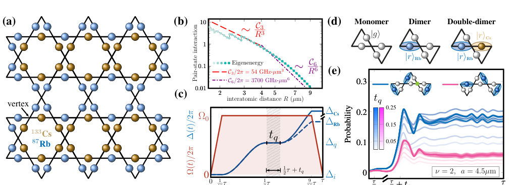
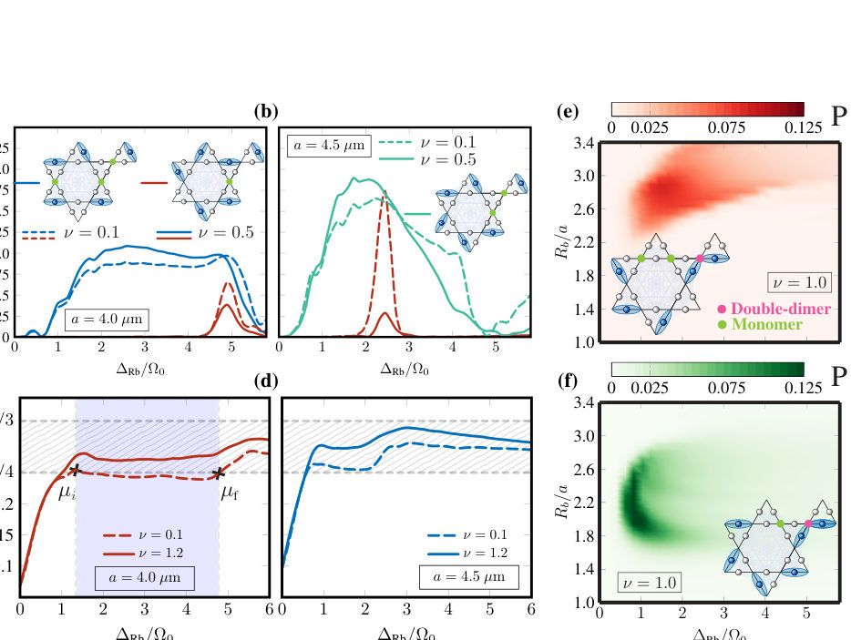
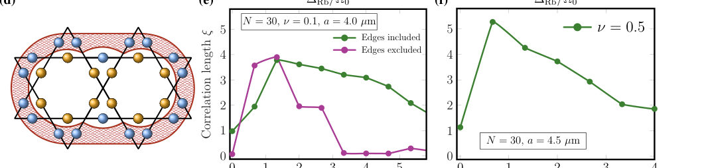
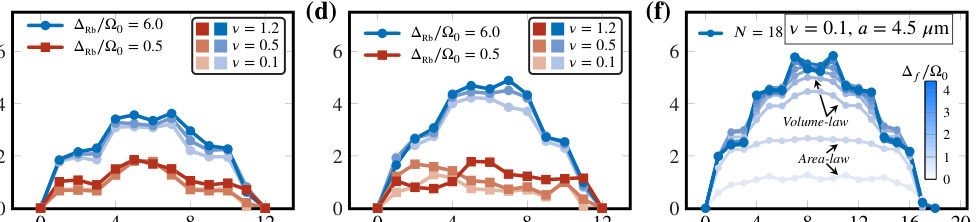
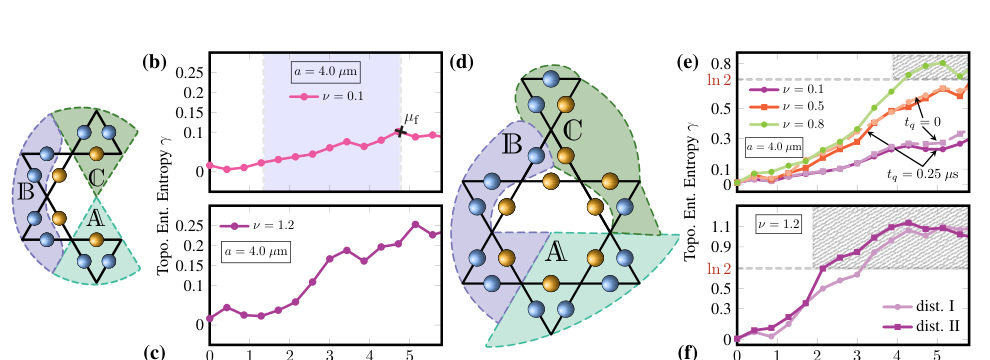
Summary. This paper theoretically explores how a dual-species Rydberg atom array on a Kagome lattice can be driven into a Quantum Spin Liquid state. By using a specific laser-tuning protocol, the authors show that the system can exhibit topological order and long-range entanglement. This work provides a framework for using different atomic species to control many-body physics in quantum simulators.
Why it may be interesting. It demonstrates how heteronuclear interaction asymmetry can be exploited to engineer exotic topological phases like the Z2 spin liquid, offering a new pathway for preparing highly entangled states in Rydberg simulators.
Main problem. Investigating the emergence and properties of a Quantum Spin Liquid (QSL) state in a dual-species (Rb and Cs) Rydberg atom array arranged on a Kagome lattice.
Main result. The study identifies specific detuning and quenching conditions to achieve a QSL state and proves the existence of topological order via Kitaev-Preskill topological quantum entanglement entropy.
Method. Numerical simulations using the Bloqade.jl Julia package, employing a sweep-quench-sweep protocol and analyzing correlation length, mutual information, and entanglement entropy.
Model / system. A programmable quantum simulator consisting of a dual-species (Rb and Cs) ultracold neutral atom array on a Kagome lattice, governed by a Hamiltonian with Rydberg blockade and long-range van der Waals interactions.
Key observables. Rydberg density (filling fraction), correlation length, mutual information, and Kitaev-Preskill topological quantum entanglement entropy (TQEE).
Important parameters / regimes. Lattice spacing (a), detuning ratio (nu), detuning parameter (Delta Rb/Omega), quenching time (tq), and interatomic interaction energies (V_ij).
Assumptions / limitations. The system is studied within the Rydberg blockade regime using a truncated subspace approach to manage Hilbert space dimensionality.
Figures summary. Fig 1 shows the Kagome lattice spatial configuration; Fig 2 plots excitation configuration probabilities; Fig 4 shows mutual information scaling; Fig 5 and 6 illustrate the evolution of topological entanglement entropy and its peaks at QSL boundaries.
Paper structure. The paper introduces the dual-species Kagome platform, defines the Hamiltonian and excitation protocol, analyzes configuration probabilities and correlation lengths, and concludes with the quantification of topological order through entanglement entropy.
Dual-species arrays of ultracold neutral atoms have recently attracted increased interest due to the ability to independently control different atomic species and tune the interatomic interactions. This capability provides additional flexibility essential for both quantum computing and quantum simulation. In this work we theoretically investigate a quantum spin liquid (QSL) state to be simulated on a programmable quantum simulator based on a dual-species atomic array, arranged on a Kagome lattice. The Kagome lattice is formed by corner sharing triangles. This specific spatial arrangement enhances the competing interactions between atoms and is often considered as a model for realising QSL states. When the atoms are excited into Rydberg states, long-range interactions result in Rydberg blockade. The geometric frustration of the Kagome lattice, combined with the Rydberg blockade, drives the system into exotic phases with topological order and long-range entanglement. To drive an array into the QSL state, we use a sweep-quench-sweep protocol, when the atoms are quasiadiabatically excited into Rydberg state with individually controlled detuning from the resonance for each atomic species. The filling fraction, indicating emergence of a QSL state, is represented by a density of Rydberg excitations. We identified the conditions required for QSL state in a dual-species array with non-uniform interaction energies. We calculated the correlation length and studied the mutual information as a function of the size of the subset of the system. The existence of a topological order was proved by estimating the Kitaev-Preskill topological quantum entanglement entropy.
Authors: Dong-Lin Wang, Shi Pu
Type: theory · Category: statistical mechanics · PDF: https://arxiv.org/pdf/2605.04020v1
Analysis basis: full PDF text, analyzed in chunks
Topic relevance: 🔥 Keldysh / 2PI / non-Gaussian methods 4/5 · non-equilibrium dynamics 3/5 · non-equilibrium universality 3/5 · correlated / nonlocal dissipation 2/5 · driven-dissipative phase transition 2/5 · methods for driven-dissipative 2/5 · scars & prethermalization 2/5
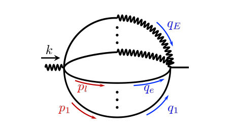
Summary. The paper presents a systematic method to identify how nonlinear interactions in effective field theories lead to power-law relaxation at late times. By using Landau singularity analysis, the authors can determine the late-time decay behavior without performing explicit loop integrations. This provides a unified description of long-time tails in a wide range of macroscopic systems.
Why it may be interesting. This is highly relevant for many-body dynamics as it provides a universal, systematic framework for predicting long-time tails and non-exponential relaxation in any system governed by nonlinear hydrodynamic-like effective field theories.
Main problem. Understanding how nonlinear hydrodynamic interactions cause the relaxation of fluctuations to transition from exponential decay to power-law decay (long-time tails) at late times.
Main result. The authors establish a systematic way to identify nonlinear decay modes and power-law exponents using Landau singularity analysis, showing that nonlinear interactions generate new decay modes and universal power-law behavior in the presence of gapless modes.
Method. Landau singularity analysis applied to Schwinger-Keldysh effective field theory, using Landau equations to identify loop integral singularities and inverse Fourier transforms to extract time-domain asymptotic behavior.
Model / system. A broad class of macroscopic effective theories described by the Schwinger-Keldysh effective field theory (SK-EFT) framework, specifically focusing on near-equilibrium systems with gapless hydrodynamic modes and nonlinear mode coupling.
Key observables. Two-point correlation functions (retarded, advanced, and symmetrized correlators) and the time-domain signal decay.
Important parameters / regimes. Late-time regime (t -> infinity), long-wavelength limit (k -> 0), spatial dimension (d), and the minimum loop number (L_min) determined by the interaction power.
Assumptions / limitations. The free two-point functions possess simple poles in the complex frequency plane, and the functions vanish sufficiently fast at infinity to ensure the convergence of the inverse Fourier transform.
Figures summary. Figure 1 provides an illustration of a 'banana diagram' (a 1PI topology) used to represent the loop integrals and the structure of the self-energy analysis.
Paper structure. The paper introduces the problem of nonlinear relaxation, defines the SK-EFT framework, applies Landau singularity analysis to identify loop-induced singularities, derives the resulting power-law decay in the time domain, and provides a unified description for a broad class of theories.
Nonlinear hydrodynamic interactions can change the relaxation of fluctuations from exponential to power-law decay at late times. Schwinger-Keldysh effective field theory provides a standard framework for describing such fluctuation effects, where the nonlinear late-time behavior is encoded in loop corrections. Extracting this behavior requires identifying the singularities of loop integrals, whose structure becomes increasingly intricate beyond simple models. We apply Landau singularity analysis to two-point functions in effective field theories and determine the singularities induced by nonlinear interactions without performing the loop integrations explicitly. From these frequency-space singularities, we extract nonlinear relaxation modes that control the late-time behavior. When gapless modes are present, these modes produce power-law decay at late times. Our results give a systematic singularity-based description of nonlinear late-time relaxation in a broad class of macroscopic effective theories.
Authors: Myeongsu Kim, Manas Sajjan, Sabre Kais
Type: both · Category: quantum information and computing · PDF: https://arxiv.org/pdf/2605.03729v1
Analysis basis: full PDF text, analyzed in chunks
Topic relevance: 🔥 QC/QI experiment 4/5 · 🔥 quantum measurements 4/5 · entanglement & information structure 3/5 · non-equilibrium dynamics 3/5
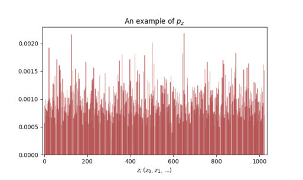
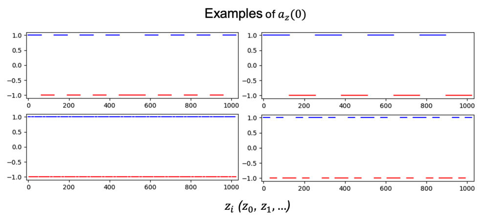
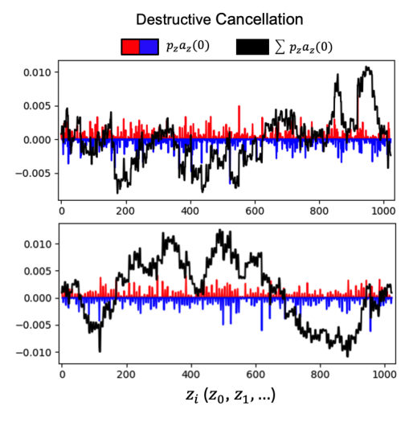
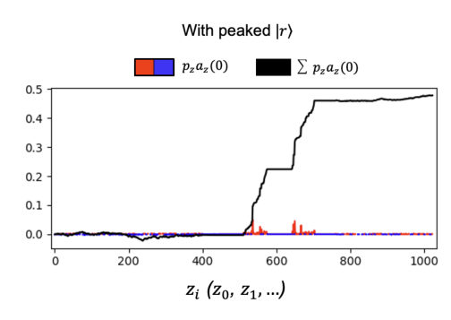
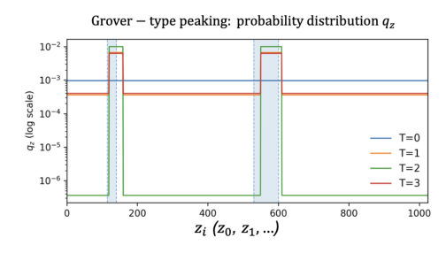
Summary. The paper introduces a method called ensemble engineering to prevent the cancellation of signals during quantum measurements by preparing states that concentrate probability mass in specific regions of the computational basis. By aligning the sampling weights with the operator's sign structure, the authors show that previously hidden physical signals can be recovered on real IBM quantum hardware. This approach offers a practical way to improve measurement efficiency in the NISQ era.
Why it may be interesting. This is highly relevant for many-body dynamics and open quantum systems as it provides a new tool for extracting complex correlation functions and signatures of quantum chaos (like OTOCs) from noisy, near-term quantum hardware.
Main problem. Estimating expectation values on NISQ devices via sampling suffers from destructive cancellation when near-uniform ensembles cause positive and negative operator contributions to cancel out, making signals unresolvable.
Main result. The authors demonstrate that 'ensemble engineering'—preparing quantum states with non-uniform, localized weights—can align the sampling distribution with the operator's sign structure to overcome this cancellation, a result validated on IBM quantum processors.
Method. The framework uses two circuit constructions: a Grover-type amplitude amplification protocol for benchmarking and an oracle-free shallow circuit for practical, low-depth hardware implementation.
Model / system. The study utilizes IBM quantum processors (up to 20 qubits) in the NISQ regime, focusing on the infinite-temperature correlation function (ITCF) and diagonal observables like Pauli-Z strings.
Key observables. Infinite-temperature correlation function (ITCF), sector contrast (CE(0)), sector mass, and operator-resolved diagonal profiles.
Important parameters / regimes. Short-time/diagonal regime (t approx 0), Grover iteration count (T), and shallow circuit depth (d).
Assumptions / limitations. The analysis primarily focuses on the short-time, diagonal-dominated regime where operators are approximately sector-diagonal.
Figures summary. Figures illustrate the structureless nature of Haar-random weights, the sign-alternating operator profiles, the cumulative signal cancellation in uniform ensembles, and the successful preservation of signal structure in Grover and shallow-peaking hardware runs.
Paper structure. The paper identifies the structural cause of cancellation, introduces the ensemble engineering framework, presents two circuit-based implementation strategies (Grover-type and oracle-free shallow), validates the approach with IBM hardware experiments, and discusses trade-offs between amplification and noise.
On noisy intermediate-scale quantum (NISQ) devices, expectation values of many observables are obtained through sampling-based approximations to trace-like quantities. A central limitation of this approach is destructive cancellation under near-uniform ensembles, which can render physically relevant signals effectively unresolvable. Here we show that this limitation is not simply statistical, but reflects a structural mismatch between ensemble weights and the operator-dependent sign structure of the measured correlator. We introduce a general framework for mitigating this effect through quantum ensemble engineering, in which the sampling distribution is encoded directly in the prepared quantum state. By reformulating correlators in a basis-resolved representation, we make the origin of cancellation explicit and derive strategies for aligning ensemble weights with operator structure. We realize this approach using two complementary circuit constructions: a Grover-type amplitude amplification protocol that provides a structure-aligned benchmark, and an oracle-free shallow circuit designed for near-term hardware constraints. Using the infinite-temperature correlation function as a representative setting, we demonstrate on IBM quantum processors with up to 20 qubits that engineered ensembles expose operator-resolved contributions that are strongly suppressed under uniform averaging. We identify a practical tradeoff between amplification strength and noise robustness, extend the framework to multi-qubit diagonal observables, and outline a path toward non-diagonal generalizations. These results position ensemble engineering as a new tool for improving measurement efficiency in near-term quantum algorithms.
Authors: Andrea Auconi, Sosuke Ito
Type: theory · Category: statistical mechanics · PDF: https://arxiv.org/pdf/2605.03757v1
Analysis basis: full PDF text, analyzed in chunks
Topic relevance: 🔥 non-equilibrium dynamics 4/5 · entanglement & information structure 3/5 · methods for driven-dissipative 3/5 · driven-dissipative phase transition 2/5 · non-equilibrium universality 2/5
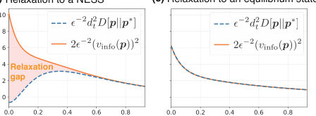
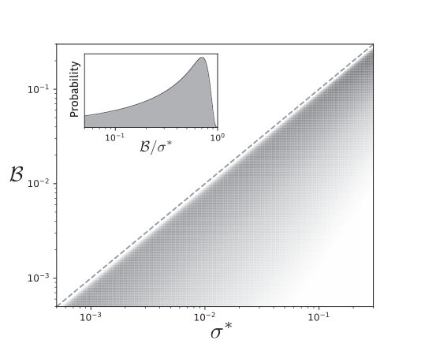
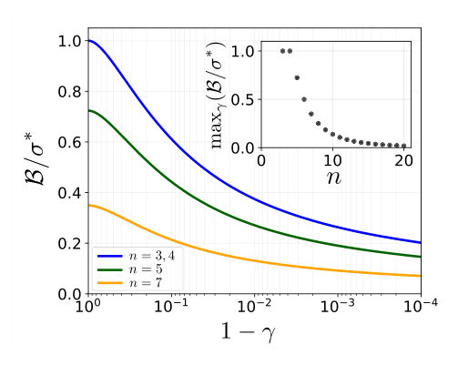
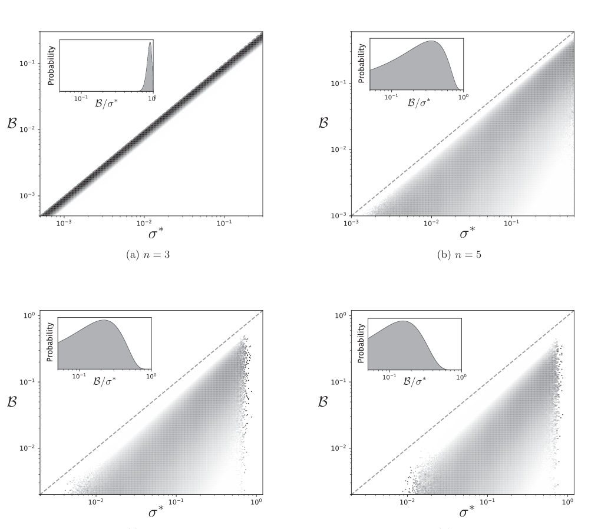
Summary. The paper introduces an information-geometric method to detect non-equilibrium driving by measuring a 'relaxation gap' in the system's entropy-like divergence. It establishes a new thermodynamic lower bound on the entropy production rate that can be estimated from relaxation behavior. This provides a powerful tool for characterizing dissipation in systems where the full driving force is not explicitly known.
Why it may be interesting. This is highly relevant for researchers in open quantum systems as it provides a way to detect non-equilibrium driving and bound dissipation using only the observable relaxation dynamics of the system's density matrix.
Main problem. Developing a criterion to detect violations of detailed balance (nonconservative driving) and establishing thermodynamic lower bounds on the steady-state entropy production rate using information-geometric signatures.
Main result. The authors identify a 'relaxation gap'—the discrepancy between the acceleration of the Kullback-Leibler divergence and twice the squared intrinsic speed—as a signature of nonconservative driving, and derive a new lower bound on the steady-state entropy production rate based on this gap.
Method. The study uses information geometry, specifically the Kullback-Leibler divergence and Fisher information, combined with perturbation analysis and the Cauchy-Schwarz inequality to relate relaxation dynamics to dissipation.
Model / system. The analysis covers Markov jump processes (discrete-state) and Fokker-Planck dynamics (continuous-state), including specific test models like a uniform biased cycle and a 2D hierarchical system.
Key observables. Steady-state entropy production rate (sigma*), Kullback-Leibler divergence, intrinsic speed (v_info), and the relaxation gap.
Important parameters / regimes. Mixing rate (kappa), asymmetry parameter (gamma or delta), perturbation magnitude (epsilon), and network dimension (n).
Assumptions / limitations. Results are primarily derived in the weak-perturbation (near-equilibrium or near-steady-state) limit and assume ergodic, locally reversible dynamics.
Figures summary. Figure 1 shows schematic probability trajectories and examples of relaxation with and without a relaxation gap; Figure 2 presents numerical analysis of the bound's tightness using random rate matrices; Figure 3 shows the bound's performance for a biased cycle model.
Paper structure. The paper introduces the relaxation gap concept, provides analytical derivations for Markov jump processes, extends the results to Fokker-Planck dynamics, and concludes with numerical validation of the thermodynamic bounds.
We propose an information-geometric signature of nonconservative driving that detects violations of detailed balance using the Kullback--Leibler divergence and the Fisher information. For Markov jump processes satisfying detailed balance, we show that, near equilibrium, the acceleration of the Kullback--Leibler divergence relative to the equilibrium state is given by twice the Fisher information with respect to time. In contrast, for relaxation toward a nonequilibrium steady state, this relation is generally violated even near the steady state. We refer to the resulting discrepancy as the relaxation gap and derive a lower bound on the steady-state entropy production rate in terms of this gap. We demonstrate that this bound is particularly tight for networks with simple cyclic topologies. Finally, we show that analogous relations and bounds hold for Fokker--Planck dynamics.
Authors: Loc Thi-Hoang Ngo, Julia Codere, Javin Ohara, Brian Kaufman, Martin G Cohen, Tamas Rozgonyi, Philipp Marquetand, Matthew Bain, Brett J Pearson, Ruaridh Forbes, Thomas Weinacht
Type: experiment · Category: other · PDF: https://arxiv.org/pdf/2605.03298v1
Analysis basis: abstract only; PDF text extraction failed or PDF unavailable
Topic relevance: 🔥 interference shaping light 4/5 · non-equilibrium dynamics 3/5 · quantum measurements 3/5 · entanglement & information structure 2/5 · quantum optics experiment 2/5
Summary. The researchers developed a 'molecular attoscope' using shaped deep-ultraviolet laser pulses to observe the simultaneous motion of electrons and nuclei in benzene. This technique allows for the tracking of electronic coherence on an attosecond scale alongside nuclear motion on a femtosecond scale. This advancement provides a way to visualize the complex, entangled evolution of wave functions in neutral molecules.
Why it may be interesting. It demonstrates a method for real-time visualization of the evolution of coupled electronic-nuclear wave functions, which is highly relevant to understanding non-adiabatic dynamics and open quantum system evolution in molecular physics.
Main problem. The difficulty of simultaneously tracking coupled electronic and nuclear dynamics on their respective attosecond and femtosecond timescales in neutral molecular systems.
Main result. Demonstration of a 'molecular attoscope' that traces 856-attosecond electronic motion and 36-femtosecond nuclear motion in neutral benzene, showing electronic coherence modulated by nuclear dynamics.
Method. A holographic approach using shaped laser pulses in the deep ultraviolet to perform coherent measurements of an entangled wave packet.
Model / system. An entangled electronic-nuclear wave packet in neutral benzene molecules.
Key observables. Electronic coherence and nuclear dynamics/motion.
Important parameters / regimes. 856-attosecond electronic period, 36-femtosecond nuclear period, deep ultraviolet pulse shaping.
Paper structure. The paper introduces the challenge of coupled dynamics, describes the implementation of the molecular attoscope using shaped DUV pulses, presents the measurement of benzene dynamics, and discusses the general applicability of the holographic approach.
Tracking the coupled motion of electrons and nuclei on their intrinsic timescales is essential to understanding and controlling photochemical transformations. While attosecond techniques have provided unprecedented insight into electronic dynamics, they have largely been restricted to ionic systems, with nuclear motion often neglected or indirectly inferred. Here, we demonstrate a ``molecular attoscope", which uses shaped laser pulses in the deep ultraviolet to perform a coherent measurement of electronic and nuclear dynamics in an entangled wave packet in neutral benzene. This enables us to trace both the 856-attosecond-period electronic motion and the 36-femtosecond-period nuclear motion. We observe electronic coherence persisting over hundreds of optical cycles, modulated by nuclear dynamics. Our holographic approach is general, and lays the groundwork for coherent measurements capable of visualizing the evolution of the coupled electronic-nuclear wave function in real time.
Authors: Christopher Ong, S. A. Parameswaran, Benedikt Placke, Dominik Hahn
Type: theory · Category: statistical mechanics · PDF: https://arxiv.org/pdf/2605.03011v1
Analysis basis: full PDF text, analyzed in chunks
Topic relevance: 🔥 methods for driven-dissipative 4/5 · non-equilibrium dynamics 3/5 · Keldysh / 2PI / non-Gaussian methods 2/5 · analog quantum simulation 2/5 · driven-dissipative phase transition 1/5 · entanglement & information structure 1/5
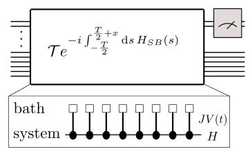
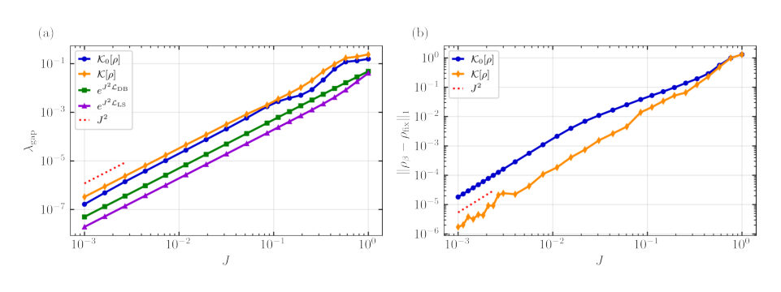
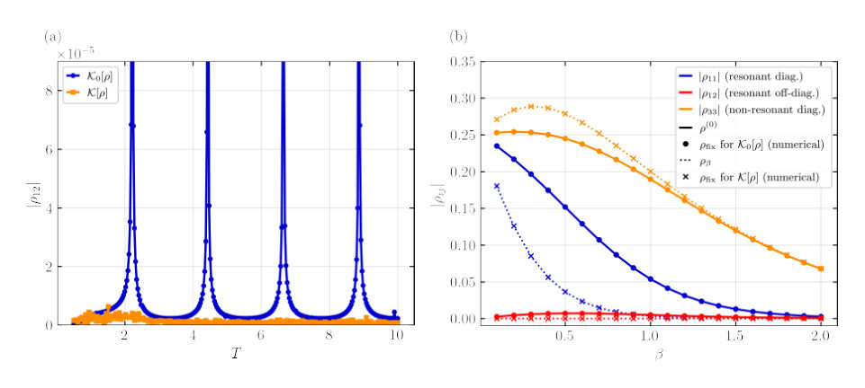
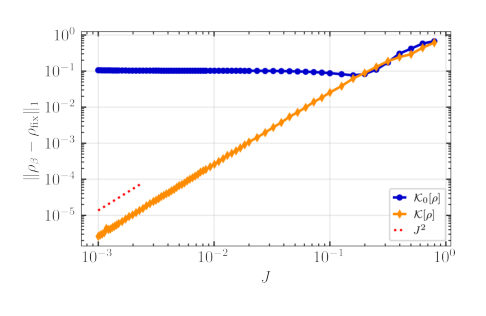
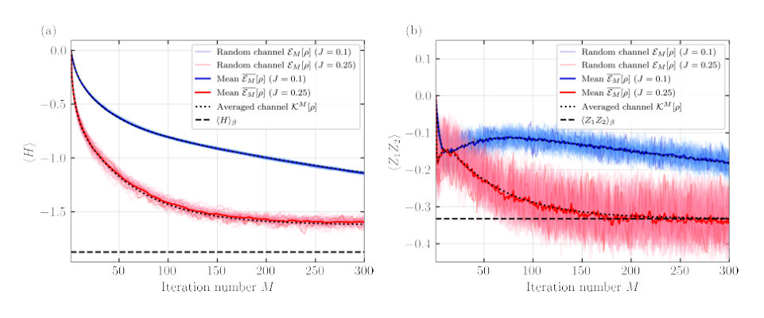
Summary. This paper provides rigorous mathematical proofs that the error in preparing thermal states via weak-coupling dissipative protocols can be controlled and scales as J^2. It demonstrates that using randomized evolution times suppresses problematic many-body resonances while maintaining efficient error bounds. The results suggest a practical pathway for implementing thermal state preparation on noisy, intermediate-scale quantum devices.
Why it may be interesting. This paper is highly relevant for researchers in open quantum systems and many-body dynamics as it provides a rigorous way to control errors in dissipative quantum algorithms, offering a path toward scalable thermal state preparation on near-term quantum hardware.
Main problem. Establishing rigorous error bounds for preparing a thermal (Gibbs) state using dissipative collision models under weak system-bath coupling, specifically addressing the Lamb shift and many-body resonances.
Main result. The authors prove that the fixed-point error scales quadratically with the coupling strength (J^2) and that the additional unitary evolution (Lamb shift) can be controlled by tuning J. They also show that randomized evolution times effectively suppress many-body resonances without significantly increasing sampling variance.
Method. The study uses a combination of Dyson series expansion, degenerate perturbation theory, and randomized quantum channels to derive analytical error bounds and perform numerical validation on the mixed-field Ising model.
Model / system. A quantum many-body system with a local Hamiltonian coupled weakly to a resettable bath of ancilla qubits via a time-dependent interaction. The dynamics are modeled using collision models and Lindbladian evolution satisfying KMS detailed balance.
Key observables. Trace distance from the thermal state, spectral gap, Hamiltonian expectation value, and two-point correlators.
Important parameters / regimes. System-bath coupling strength (J), inverse temperature (beta), interaction time (T), randomization timescale (T0), and filter function width (sigma).
Assumptions / limitations. The derivation assumes the weak-coupling limit (J << 1) and relies on the assumption that the rescaled mixing time scales as o(J^-2) as J approaches zero.
Figures summary. Figure 1 illustrates the collision model setup; Figure 2 shows the scaling of the spectral gap and trace distance; Figure 6 and 7 demonstrate the evolution of two-point correlators and energy in the mixed-field Ising model, comparing randomized and averaged channels.
Paper structure. The paper introduces the problem of thermal state preparation, develops a mathematical framework for the collision model, derives rigorous error bounds for the fixed-point error and variance, provides numerical validation using the Ising model, and concludes with open questions.
Thermal state preparation is a central challenge in the simulation of quantum many-body systems. Yet, provably efficient algorithms for this task were only introduced recently [Chen et al. Nature 646, 561 (2025)]. These algorithms are based on dissipative Lindbladian evolution which exactly fixes the thermal state. Controlled and efficient digital simulation of this evolution, although possible in principle, remains out of reach for present-day quantum hardware. Subsequent work has therefore focused on analog approximations of the proposed Lindbladians via collision models' with relatively modest requirements -- a resettable bath of ancilla qubits whose couplings to the system can be tuned in time-dependent fashion -- while still admitting rigorous fixed-point error bounds. Existing rigorous approaches, however, do not exploit the fact that these constructions generically implement not only the desired Lindblad dynamics, but also an additional unitary evolution generated by the system Hamiltonian which may aid convergence to the thermal state [Lloyd and Abanin arXiv:2506.21318 (2025)]. Here, we show that this unitary contribution does indeed tighten the fixed-point error bound and demonstrate that it is rigorously controlled by the system-bath coupling strength $J$, scaling as $J^2$. This demonstrates that the effect of the spuriousLamb shift' term generated by the system-bath interaction can be controlled by tuning $J$. We clarify the role, previously observed, of a randomized implementation in suppressing possible resonances of the drive with the many-body spectrum, and bound the additional variance that this randomization imposes on observables. Finally, we numerically study aspects of the protocol which are relevant for its practical realization, such as the mixing time.
Authors: Fabrizio Berritta, Jan A. Krzywda, Tom Dvir, Paul Buttles, Stanislav Eilhart, Jeroen Danon, Ferdinand Kuemmeth
Type: experiment · Category: quantum information and computing · PDF: https://arxiv.org/pdf/2605.03187v1
Analysis basis: full PDF text, analyzed in chunks
Topic relevance: 🔥 QC/QI experiment 4/5 · 🔥 quantum measurements 4/5 · non-equilibrium dynamics 2/5 · quantum optics experiment 2/5
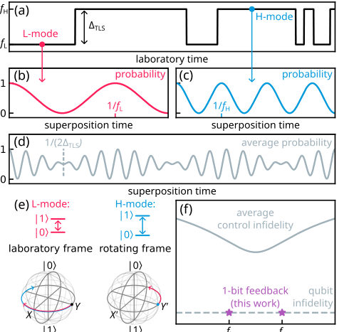
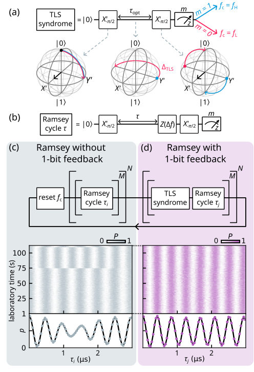
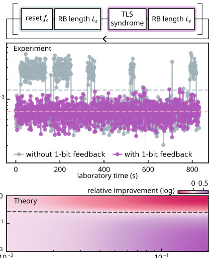
Summary. The paper presents an experimental method to stabilize a superconducting qubit that periodically switches between two frequency modes due to TLS defects. By using an FPGA for real-time, single-shot feedback, the researchers significantly reduced gate errors. This approach offers a scalable strategy for managing discrete instabilities in large-scale quantum processors.
Why it may be interesting. This work is highly relevant to open quantum systems and quantum optics as it demonstrates a practical control-based approach to mitigating non-Markovian noise and managing stochastic frequency fluctuations in a driven-dissipative system.
Main problem. Parasitic two-level-system (TLS) defects cause stochastic, telegraphic frequency shifts in superconducting qubits, leading to dephasing and reduced gate fidelity.
Main result. The authors demonstrate a real-time '1-bit feedback' protocol using an FPGA that reduces control infidelity by approximately 77% and suppresses Ramsey beating.
Method. An adaptive, low-latency protocol uses a single-shot measurement to estimate the qubit's current frequency mode and dynamically updates the control frequency.
Model / system. A superconducting transmon qubit coupled to a TLS, exhibiting bistable frequency switching between a high and low mode, operated via an FPGA-powered controller.
Key observables. Qubit frequency, excited-state population P(1), control infidelity (1-F), and Ramsey fringe beating patterns.
Important parameters / regimes. Frequency shift delta_TLS approx 374 kHz, estimation bandwidth approx 136 kHz, and gate time approx 48 ns.
Assumptions / limitations. The TLS switching rate is much slower than the estimation bandwidth, and the system operates in the underdamped regime of the Anderson-Kubo framework.
Figures summary. Fig 1 illustrates qubit bistability and the resulting beating pattern; Fig 2 shows the schematic of the protocol; Fig 3 displays the suppression of telegraphic fluctuations in randomized benchmarking and the theoretical error budget.
Paper structure. The paper introduces the problem of TLS-induced bistability, describes the experimental platform and the 1-bit feedback protocol, validates the method via Ramsey interferometry and randomized benchmarking, and provides an analytical error budget analysis.
Parasitic two-level-system (TLS) defects limit the stability and performance of solid-state quantum processors. Their interaction with a qubit can cause discrete, stochastic shifts of the qubit frequency, making the qubit bistable. We experimentally demonstrate an adaptive protocol for operating a bistable qubit with high fidelity using a classical controller powered by a field-programmable gate array (FPGA). Our "1-bit feedback" protocol estimates the qubit's bistable frequency from only one single-shot measurement, reaching the information limit set by the qubit's intrinsic entropy. We validate the protocol in a superconducting qubit by suppressing TLS-induced Ramsey beating, and deploy it to stabilize gate fidelities over time with approximately 136 kHz estimation bandwidth and a 77% error reduction. Our approach provides a simple, yet fundamentally efficient strategy for mitigating dephasing errors induced by strongly coupled TLS defects, and may enable the operation of large future qubit arrays suffering from few remaining, discrete instabilities.
Authors: Kyota Tamano, Keiji Saito
Type: theory · Category: statistical mechanics · PDF: https://arxiv.org/pdf/2605.03192v1
Analysis basis: full PDF text, analyzed in chunks
Topic relevance: 🔥 non-equilibrium universality 4/5 · driven-dissipative phase transition 3/5 · non-equilibrium dynamics 3/5 · methods for driven-dissipative 2/5
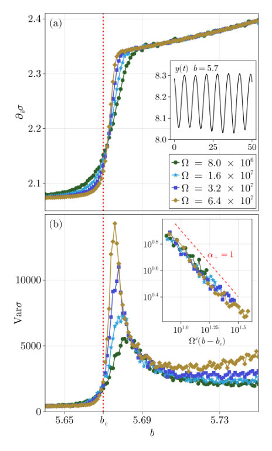
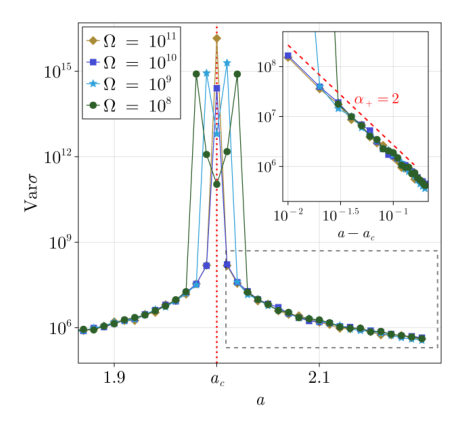
Summary. This paper provides a complete classification of how entropy production fluctuations scale near different types of nonequilibrium phase transitions in chemical networks. It establishes a fundamental inequality showing that entropy production fluctuations are a more sensitive probe of criticality than parametric responses. The results are universal for any system undergoing these standard bifurcations.
Why it may be interesting. This work provides a universal framework for understanding how dissipation-related quantities fluctuate near critical points, which is highly relevant to the study of stability and phase transitions in open quantum systems and non-equilibrium many-body dynamics.
Main problem. The paper aims to classify the universal critical behavior of entropy production fluctuations and parametric responses during macroscopic nonequilibrium phase transitions in chemical reaction networks.
Main result. The authors derive generic critical exponents for various bifurcations and establish a universal scaling inequality, alpha - 2*beta >= 0, proving that diverging responses necessitate diverging entropy production fluctuations.
Method. The study employs center-manifold theory, normal forms, Floquet theory, and system-size expansions (Van Kampen/Kurtz) alongside a trajectory-space Cramér-Rao type bound.
Model / system. Well-mixed, reversible chemical reaction networks (CRNs) described by the Chemical Master Equation and mass-action kinetics in the thermodynamic limit.
Key observables. Variance of entropy production (Var sigma) and the parametric response of the entropy production rate to a control parameter (partial theta sigma).
Important parameters / regimes. Control parameter (theta), system size (Omega), observation time (tau), and bifurcation types (pitchfork, transcritical, saddle-node, and Hopf).
Assumptions / limitations. Reversible reactions, well-mixed/homogeneous system, thermodynamic limit (Omega -> infinity) taken before the long-time limit, and non-degenerate/generic bifurcation coefficients.
Figures summary. Figure 1 shows the parametric response and variance of entropy production for a Hopf bifurcation, while Figure 2 illustrates scaling for a transcritical bifurcation; Table I summarizes critical exponents for all analyzed bifurcations.
Paper structure. The paper introduces the problem of entropy production criticality, develops a mathematical framework using system-size expansion and center-manifold theory, classifies exponents for various bifurcation types, establishes a universal inequality via information theory, and validates results with numerical simulations of the Brusselator and Schlögl models.
Stochastic thermodynamics gives universal relations for microscopic entropy production, yet its critical behavior at macroscopic nonequilibrium transitions remains unclassified. We study well-mixed reversible chemical reaction networks in the macroscopic-first limit, where transitions arise as local bifurcations of mass-action dynamics. Using linear-noise formulas, center-manifold normal forms, and Floquet theory, we obtain generic exponents for entropy-production fluctuations and responses at pitchfork, transcritical, saddle-node, and Hopf bifurcations. Beyond this low-order classification, a trajectory-space Cramér-Rao type bound yields the universal scaling inequality $α- 2β\geq 0$. Hence divergent responses require divergent fluctuations, but not conversely, making entropy-production fluctuations a sharper probe of nonequilibrium criticality.
Authors: Serhii Kryhin, Vivishek Sudhir
Type: theory · Category: quantum information and computing · PDF: https://arxiv.org/pdf/2605.03197v1
Analysis basis: full PDF text, analyzed in chunks
Topic relevance: 🔥 methods for driven-dissipative 4/5 · non-equilibrium dynamics 3/5 · Keldysh / 2PI / non-Gaussian methods 2/5 · quantum measurements 2/5
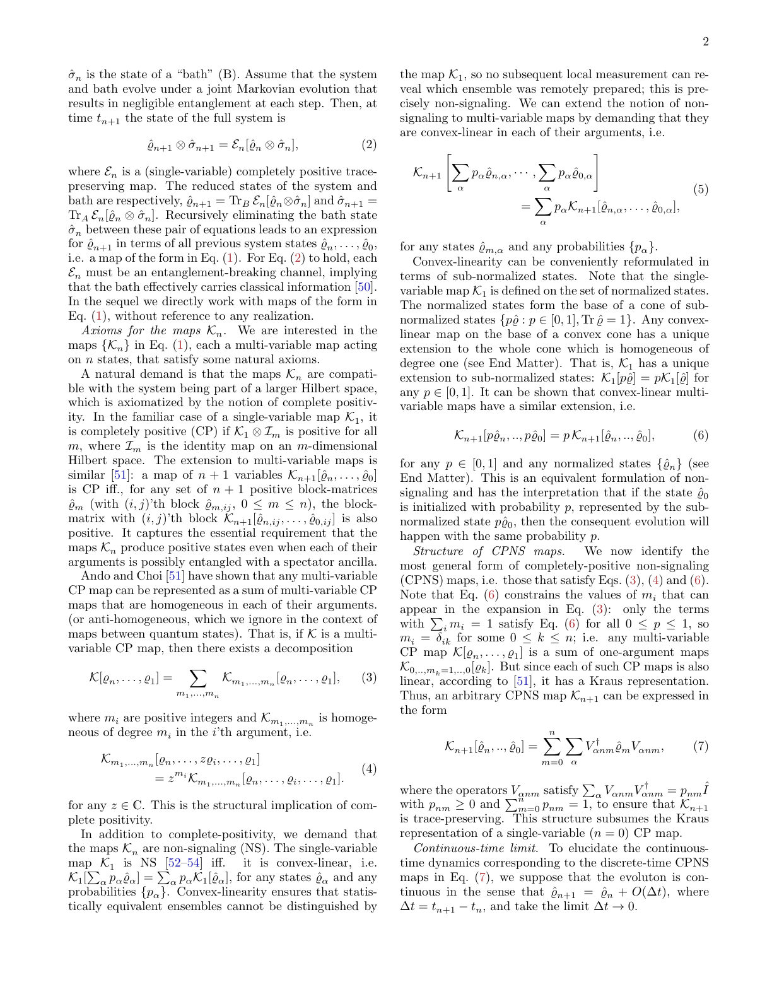
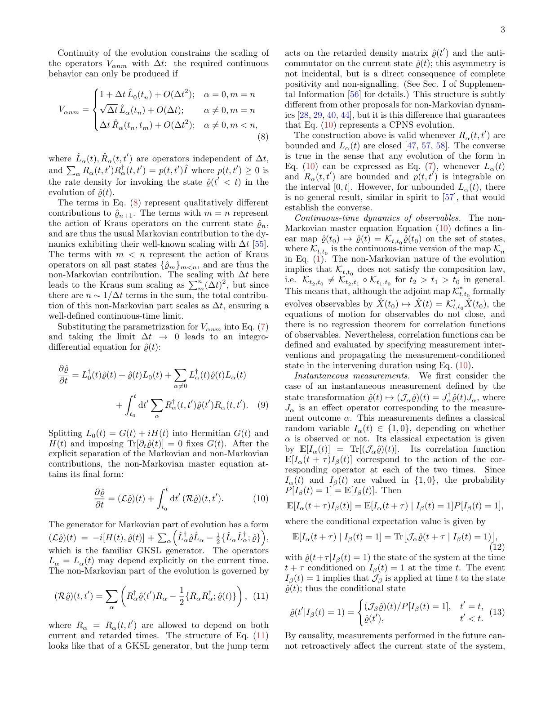
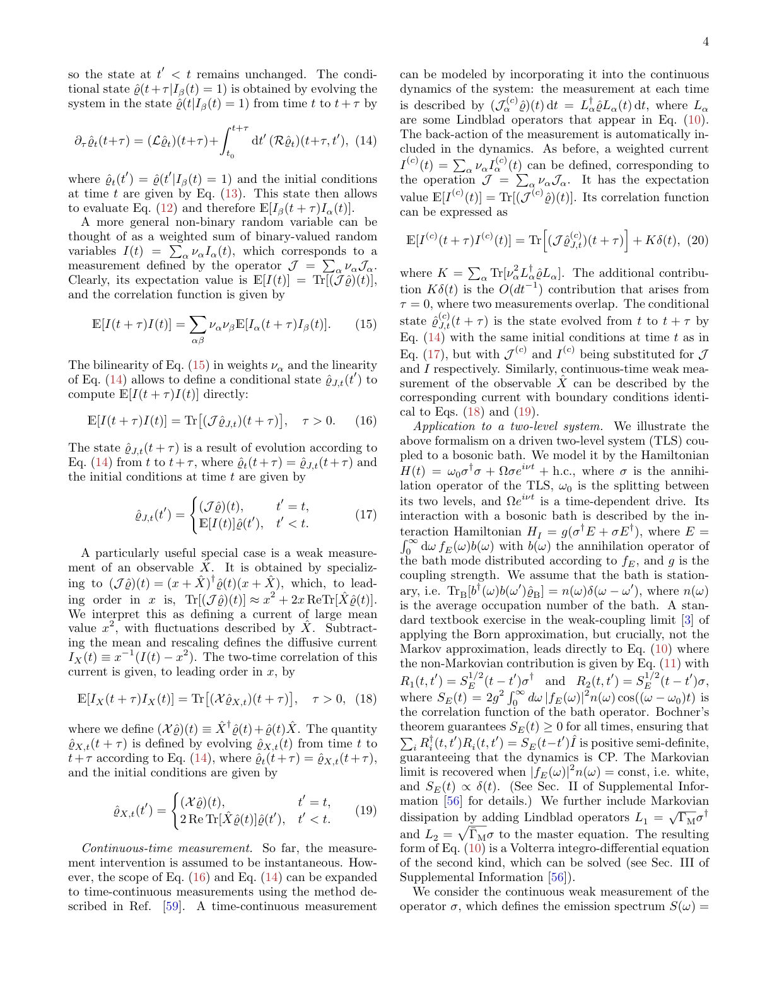
Summary. This paper develops a general mathematical framework for continuous-time quantum dynamics that accounts for memory effects while preserving complete positivity and non-signaling. It introduces a new integro-differential master equation that generalizes the Lindblad equation to include an integral term for bath memory. The authors demonstrate the utility of this approach by showing how non-Markovianity manifests as frequency-dependent linewidths in the Mollow triplet of a driven two-level system.
Why it may be interesting. It provides a rigorous, first-principles derivation of a non-Markovian master equation that avoids ad-hoc approximations, offering a powerful tool for state estimation and control in open quantum systems subject to complex noise.
Main problem. The lack of a general, model-agnostic, and mathematically consistent framework for continuous-time non-Markovian quantum dynamics that satisfies both complete positivity and the non-signaling principle.
Main result. The derivation of a new integro-differential master equation that generalizes the GKSL equation with a memory integral, capable of describing systems coupled to noise with any integrable power spectral density.
Method. The authors use convex analysis and functional analysis to take the continuous-time limit of a discrete-time non-Markovian quantum stochastic process, applying the Wiener-Hopf factorization method for analytical solutions.
Model / system. A general quantum system undergoing non-Markovian evolution, with a specific application to a driven two-level system (TLS) coupled to a stationary bosonic bath.
Key observables. Two-time correlation functions of measurement outcomes, measurement currents, and the emission spectrum (specifically the Mollow triplet).
Important parameters / regimes. Integrable power spectral density, strong driving/detuning limits, and the distinction between Markovian and non-Markovian rates.
Assumptions / limitations. The framework assumes complete positivity and non-signaling; it neglects system-bath correlations (Born approximation) and the back-action of the system on the bath, and is limited to integrable power spectral densities.
Figures summary. Figure 1 illustrates a physical realization of the proposed dynamics using a system and bath evolving via a joint Markovian map.
Paper structure. The paper begins by defining non-Markovianity and establishing the mathematical framework via discrete-time maps, derives the continuous-time integro-differential master equation using convex analysis, applies the formalism to a driven two-level system to analyze the Mollow triplet, and concludes with discussion on limitations and future work.
We define non-Markovian quantum dynamics as evolution in which the current state depends on all past states, and completely characterize its structure under the assumptions of complete positivity and non-signalling. The resulting continuous-time dynamics is an integro-differential equation that augments the Gorini-Kossakowski-Sudarshan-Lindblad equation with a memory integral, and is capable of describing the quantum state of systems exposed to noise with any integrable power spectral density with no further approximations. We then establish a formalism to evaluate multi-time correlations of measurement outcomes in this general setting, obviating the need for a regression theorem. As an application, we derive the emission spectrum of a driven two-level system coupled to a non-Markovian bath: the familiar Mollow triplet acquires a frequency-dependent linewidth that encodes the memory of the bath. Our work provides a rigorous yet transparent description of the quantum state of non-Markovian systems, opening the door for state estimation and state-based quantum control beyond the Markovian regime.
Authors: Daniel Pereira, Vana Pezelj, Florian Prawits, Hannes Hübbel
Type: experiment · Category: quantum information and computing · PDF: https://arxiv.org/pdf/2605.03572v1
Analysis basis: full PDF text, analyzed in chunks
Topic relevance: 🔥 QC/QI experiment 4/5 · 🔥 quantum optics experiment 4/5 · quantum measurements 3/5
Summary. This paper demonstrates an experimental attack on a real CV-QKD system where an eavesdropper uses a blinding signal to saturate the receiver's detectors. By doing so, the attacker can hide significant amounts of added noise, making a large-scale interception appear as a secure channel. The study also identifies potential monitoring-based countermeasures to detect such attacks.
Why it may be interesting. This work is highly relevant to quantum optics and quantum communications as it explores the physical limits of security in practical photonic implementations and the impact of non-linear detector dynamics on quantum protocols.
Main problem. The vulnerability of practical Continuous-Variable Quantum Key Distribution (CV-QKD) systems to side-channel attacks, specifically the ability of an eavesdropper to hide a collective attack by blinding the receiver's detector.
Main result. The authors experimentally demonstrated a coherent detector blinding attack that can reliably hide excess noise exceeding 2.5 Shot Noise Units (SNU) by forcing the receiver into a non-linear/saturated regime.
Method. A two-stage attack strategy was implemented using a strong, detuned optical signal to induce detector saturation (enabling stage) and an EDFA-based noise source to simulate a collective attack (exploitation stage).
Model / system. A real-world CV-QKD receiver architecture using a polarization-diverse assembly, balanced coherent detectors, and FPGA-based digital signal processing, operating over 15 km of standard single-mode fiber.
Key observables. Transmission (T), excess noise (epsilon), shot noise units (SNU), thermal noise, and detector output voltage saturation.
Important parameters / regimes. Blinding power levels (e.g., -14 dBm threshold), excess noise levels (up to 2.5 SNU), and the security threshold (0.126 SNU).
Assumptions / limitations. The attack exploits the deviation of practical hardware from the ideal linear response assumed in standard security proofs; finite size effects were not considered.
Figures summary. Figure 1 shows the two-stage attack strategy; Figure 2 and 3 detail the blinding path and receiver architecture; Figure 4 shows the DSP stages; Figure 5 and 6 demonstrate the noise source and its reproducibility; Figure 7 shows the blinding source setup; Figure 12 illustrates the reduction of estimated excess noise as blinding power increases.
Paper structure. The paper introduces the security problem of CV-QKD, details the experimental setup for both the attack and the target receiver, describes the mathematical model of the blinding mechanism, presents experimental results showing noise hiding and detector saturation, and concludes with proposed countermeasures.
Continuous-variable quantum key distribution provides a theoretical unconditionally secure solution to distribute symmetric keys among users in a communication network. However, the practical devices used to implement these systems are intrinsically imperfect, and, as a result, open the door to eavesdropper attacks. In this work, we present a novel implementation of a coherent detector blinding attack, in which the eavesdropper hinders the capability of the receiver to properly estimate the channel parameters, hiding the impact of their collective attack. Our results show that excess noise in excess of 2.5 SNU can be reliably hidden by the eavesdropper, thus demonstrating the feasibility of the attack. We also discuss how our attack strategy can be further improved to allow for even stronger attacks (by using more advanced modulation formats), and propose some countermeasures to prevent it.
Authors: Jie Gu, Kangqiao Liu
Type: theory · Category: statistical mechanics · PDF: https://arxiv.org/pdf/2605.03340v1
Analysis basis: full PDF text, analyzed in chunks
Topic relevance: 🔥 quantum measurements 4/5 · methods for driven-dissipative 3/5 · entanglement & information structure 2/5 · non-equilibrium dynamics 2/5
Summary. This paper establishes a new fundamental bound on the precision of finite-frequency measurements in open quantum systems. It proves that the measurable response-to-noise ratio is strictly limited by the quantum Fisher information of the emitted field and the physical activity of the signal channels. This result is universal across different detection schemes like homodyne or photon counting.
Why it may be interesting. It provides a fundamental, detector-independent limit on the precision of measuring linear responses in open systems, bridging the gap between internal non-commutative correlations and measurable detector-facing quantities.
Main problem. Establishing fundamental finite-frequency fluctuation-response inequalities for Markovian open quantum systems in an input-output setting.
Main result. The paper derives a chain of inequalities where the measured response-to-noise ratio is bounded by the output-field quantum Fisher information rate, which is further bounded by the signal-channel activity.
Method. The authors use quantum input-output theory, the Stinespring representation, and the properties of the Symmetric-Logarithmic-Derivative (SLD) to relate measurement statistics to system dynamics.
Model / system. Markovian open quantum systems described by the GKSL master equation, coupled to bosonic input fields, including specific models like a single-sided cavity, resonance fluorescence, and a Kerr-parametric cat resonator.
Key observables. Output-field power spectra, finite-frequency response matrix, quantum Fisher information rate, and signal-channel activity.
Important parameters / regimes. Analysis frequency (omega), signal modulation amplitude (epsilon), and the dissipative/kinetic modulation parameters.
Assumptions / limitations. The system must be Markovian, the dynamics must be exponentially mixing, and the signal must be a weak periodic modulation.
Figures summary. Numerical illustrations showing the squared lock-in response versus activity-weighted output spectrum for a driven qubit and the eigenvalue behavior for a Kerr-cat resonator.
Paper structure. The paper introduces the problem of finite-frequency bounds, derives the central inequality using information-theoretic tools, proves the activity bound via the Stinespring representation, and validates the results using driven qubit and Kerr-cat resonator models.
We derive a finite-frequency fluctuation-response inequality for Markovian open quantum systems in an input-output setting. For any downstream measurement of the emitted field, the measured lock-in response-to-noise matrix is bounded by the output-field quantum Fisher information rate. For dissipative amplitude modulation with vacuum inputs, this information rate is further bounded by a frequency-independent signal-channel activity, which reduces for kinetic modulation to the stationary channel fluxes. The result is detector-facing but unraveling-independent: it applies after choosing a measurement record, while the information ceiling is set by the quantum field before any detection scheme or trajectory representation is selected. We formulate the bound for multiple signal channels and real finite-frequency quadratures, and illustrate it with a single-sided cavity, resonance fluorescence, and a truncated Kerr-parametric cat resonator.
Authors: A. N. Anisimov, K. Mavridou, A. V. Mathews, M. Helm, G. V. Astakhov
Type: experiment · Category: quantum information and computing · PDF: https://arxiv.org/pdf/2605.03717v1
Analysis basis: full PDF text, analyzed in chunks
Topic relevance: 🔥 QC/QI experiment 4/5 · 🔥 quantum optics experiment 4/5 · spintronics-quantum-optics interface 3/5
Summary. This paper reports on the discovery of chlorine-based defects in 4H-SiC that emit in the telecommunication bands. These defects allow for coherent spin control and interaction with nuclear spins, providing a scalable, chip-compatible platform for long-distance quantum networks.
Why it may be interesting. This paper is highly relevant for quantum optics and open quantum systems researchers as it demonstrates a new solid-state platform for spin-photon interfaces with high Debye-Waller factors and controllable electron-nuclear spin dynamics in the telecom window.
Main problem. The need for a scalable quantum memory platform that provides native telecom-band emission (O- and C-bands) and coherent spin control without the need for complex frequency conversion.
Main result. The identification of chlorine-based defects (ClV) in 4H-SiC as a promising platform, demonstrating telecom-band zero-phonon lines, spin-active transitions at room temperature, and hyperfine interaction with 35Cl nuclear spins.
Method. The researchers used ion implantation of 35Cl into 4H-SiC, followed by time-resolved photoluminescence, Optically Detected Magnetic Resonance (ODMR) spectroscopy, and Ramsey interferometry to characterize spin dynamics.
Model / system. The physical system consists of chlorine-vacancy (ClV) defects in 4H-Silicon Carbide, specifically focusing on the ClV+ state with an electron spin S=1 coupled to 35Cl nuclear spins (I=3/2).
Key observables. Zero-phonon lines (ZPL) in the O- and C-bands, Debye-Waller factor, excited-state lifetime, ODMR resonance frequencies, hyperfine coupling constant, and spin coherence time (T2*).
Important parameters / regimes. ZPL at 1348.7 nm, Debye-Waller factor up to 39%, excited-state lifetime of ~450 ps, hyperfine constant |A| = 34 MHz, and spin coherence time T2* of approximately 2 microseconds.
Assumptions / limitations. The study assumes the observed ODMR signals are primarily linked to the Cl-related defect family and that the observed spin decoherence is limited by charge-state metastability rather than intrinsic spin-lattice limits.
Figures summary. Figure 1 shows the ClV defect structure and ODMR spectra; Figure 2 displays PL decay and quenching data; Figure 3 illustrates the spin transition scheme; Figure 4 presents the Ramsey protocol and resulting FFT spectrum.
Paper structure. The paper introduces the motivation for telecom-band quantum memories, describes the fabrication and spectroscopic characterization of Cl-defects in SiC, analyzes the spin-nuclear hyperfine structure via ODMR and Ramsey fringes, and concludes with the potential for scalable integration.
Realization of quantum memory with a photonic interface in the telecommunication bands in a wafer-scalable platform is a central requirement for long-distance quantum networks. Silicon carbide (SiC) provides a technologically mature host for integrated quantum photonics, yet only a limited number of defects combine spin functionality with telecom emission. Here we report on chlorine-based defects in 4H-SiC as a platform for telecom-band quantum memory. The emission of these defects spans the entire telecommunication range with zero-phonon lines in the O- and C-bands and a Debye-Waller factor of up to $39 \, \%$. Time-resolved photoluminescence measurements reveal a short excited-state lifetime in the sub-nanosecond range. We demonstrate that these defects are spin-active even at room temperature, exhibiting optically detected magnetic resonances (ODMR) in the sub-GHz frequency range. Using ODMR spectroscopy and Ramsey interferometry, we resolve the hyperfine structure arising from the interaction with $^{35}\mathrm{Cl}$ nuclear spins. The ODMR spectra exhibit complex behaviour in an external magnetic field due to mixing of electron-nuclear spin states, which is well reproduced by our simulations. The spin relaxation and coherence times are in the sub-microsecond range, limited by rapid quenching of the ODMR contrast and attributed to charge-state metastability. The combination of telecom-band emission, coherent spin control and compatibility with wafer-scale fabrication positions Cl-related defects in SiC as a promising platform for chip-scale quantum memories with spin-photon interfaces operating in the fiber-optic telecommunication windows.
Authors: M. Gabriela Boada G., Nicolas Dirnegger, Andrea Delgado, Prineha Narang
Type: theory · Category: quantum information and computing · PDF: https://arxiv.org/pdf/2605.03946v1
Analysis basis: full PDF text, analyzed in chunks
Topic relevance: 🔥 Keldysh / 2PI / non-Gaussian methods 4/5 · 🔥 methods for driven-dissipative 4/5 · non-equilibrium dynamics 2/5
Summary. This paper presents a new theoretical framework for simplifying the complex simulations of circuit QED by replacing complex environments with a few manageable 'pseudomodes.' It proves that even highly nonlinear systems can be reduced this way, provided their noise structure can be described by a rational function. This allows for more accurate and efficient modeling of hardware features like Purcell filters and three-wave mixing.
Why it may be interesting. It provides a powerful, nonperturbative tool for reducing the computational complexity of simulating open quantum systems with structured environments, specifically extending well-known linear pseudomode methods to the nonlinear regimes essential for modern superconducting hardware.
Main problem. Accurately modeling the interaction between the intrinsic nonlinearity of Josephson potentials and dissipative electromagnetic environments in circuit QED, which is difficult due to non-Markovian effects and scaling issues.
Main result. The authors develop a generalized pseudomode construction that allows for the nonperturbative reduction of nonlinearly intercoupled auxiliary modes, proving that elimination is possible if the eliminated sector's influence admits a rational self-energy.
Method. A generalization of Garraway's pseudomode construction using the Heisenberg picture, Dyson equations for Green's functions, and a pole expansion of the self-energy to replace a continuous bath with discrete damped modes.
Model / system. Superconducting circuit QED platforms featuring nonlinear components like Josephson junctions, including specific models for two-, three-, and four-mode systems with Kerr nonlinearities, bilinear exchange, and three-wave mixing.
Key observables. Renormalized frequencies, dressed eigenfrequencies, retarded response functions (memory kernels), and spectral density/response functions.
Important parameters / regimes. System-bath interaction strength (gSB), field bias strength (gE), drive amplitude and frequency (ARF, omegaRF), and Kerr nonlinear coefficients (K, chi).
Assumptions / limitations. The eliminated sector's influence must admit a rational self-energy (rational pole structure), and the spectral description must match experimental response functions.
Paper structure. The paper introduces the modeling challenge in cQED, develops the general theory for nonlinear pseudomode elimination via the Dyson equation, demonstrates the framework through two-mode, three-mode, and four-mode prototype models, and establishes the equivalence between four-mode bilinear exchange and three-mode three-wave-mixing systems.
Superconducting circuit quantum electrodynamical (cQED) platforms present a persistent modeling challenge: the intrinsic nonlinearity of the Josephson potential couples to a dissipative electromagnetic environment in ways that resist both perturbative treatment and naive Markovian reduction. Standard approaches either scale poorly with system size or absorb undeclared approximations about the noise structure into their master equations. In this work, we generalize Garraway's pseudomode construction to accommodate nonlinearly intercoupled auxiliary modes, providing a nonperturbative and systematically reducible framework for open-system cQED dynamics. The key observation is that pseudomode elimination is not fundamentally tied to linearity but to representability: any eliminated sector whose influence on the retained subsystem admits a rational self-energy can be replaced by a finite set of damped auxiliary modes, independent of the internal nonlinear structure of the retained Hamiltonian. We develop the general theory in the Heisenberg picture via a Dyson equation for the retained-mode Green's function, then demonstrate closed-form elimination for two-, three-, and four-mode Kerr-coupled systems with bilinear exchange and three-wave mixing interactions. The resulting framework substantially reduces the computational overhead of open-system cQED modeling while remaining faithful to the underlying physics, provided the spectral description of the eliminated sector is chosen to match the experimentally measured response functions of the hardware.
Authors: Gavin S. Hartnett, Khadijeh Sona Najafi, Aleksei Khindanov, Haoran Liao, Michael Schutzman, Michael R. Hush, Michael J. Biercuk, Yuval Baum
Type: both · Category: strongly correlated electrons · PDF: https://arxiv.org/pdf/2605.04025v1
Analysis basis: full PDF text, analyzed in chunks
Topic relevance: 🔥 QC/QI experiment 4/5 · 🔥 non-equilibrium dynamics 4/5 · entanglement & information structure 2/5
Summary. This paper reports the large-scale digital quantum simulation of the 1D Fermi-Hubbard model on a superconducting processor using up to 120 qubits. By using efficient mapping and error suppression, the authors successfully observed spin-charge separation and demonstrated that the quantum processor can be up to 3000 times faster than classical TDVP simulations in regimes where classical methods struggle.
Why it may be interesting. This work is highly relevant for many-body dynamics as it demonstrates a practical regime where quantum hardware can outperform state-of-the-art tensor network methods in simulating complex fermionic dynamics like spin-charge separation.
Main problem. Simulating the non-equilibrium dynamics of large-scale 1D Fermi-Hubbard models is computationally expensive for classical methods due to exponential Hilbert space growth and increasing entanglement entropy.
Main result. The researchers demonstrated high-resolution digital quantum simulation of up to 120 qubits, observing spin-charge separation and achieving a 3000x speedup over optimized classical TDVP simulations at the limit of classical/quantum agreement.
Method. Digital quantum simulation using a Trotterized circuit on a superconducting processor, utilizing application-aware compilation, an efficient fermion-to-qubit mapping, and error-suppression techniques like decay recovery and readout error mitigation.
Model / system. The 1D Fermi-Hubbard model (homogeneous chain) implemented on an IBM superconducting quantum processor (IBM 'boston' device) with up to 60 sites (120 qubits).
Key observables. Spin-up/down occupancy, charge tracer correlator, spin tracer correlator, and wavefront velocities for spin and charge.
Important parameters / regimes. Interaction strength U/t_h (0 to 14), evolution time t (up to 9), and system size L (up to 60 sites).
Assumptions / limitations. Assumes readout error mitigation can be performed via single-qubit confusion matrices and that the error-suppression techniques (decay recovery) can effectively handle hardware noise without exponential overhead.
Figures summary. Figure 1 shows the qubit mapping and Trotterized circuit; Figure 3 displays heatmaps of spin-up occupancy and charge density dynamics; Figure 4 compares quantum results against TDVP benchmarks, showing RMSE and wall-clock runtime advantages.
Paper structure. The paper introduces the problem of large-scale Hubbard simulations, details the hardware-aware compilation and mapping methods, presents the experimental observation of spin-charge separation, benchmarks the accuracy and runtime against classical TDVP, and discusses error mitigation strategies and future directions.
We report experimental digital quantum simulation of the one-dimensional Fermi-Hubbard model on a superconducting quantum processor at a scale beyond the reach of exact statevector simulation and challenging for state-of-the-art tensor-network methods. We encode this problem using up to 120 qubits through an efficient mapping that reduces circuit complexity, and we improve accuracy through error suppression to simulate dynamical evolution using up to 90 Trotter steps. From a vacancy defect introduced in the middle of an $L=31$-site (62-qubit) Néel initial state, we directly observe spin-charge separation to $t=9$ in natural units using up to 90 Trotter steps, and quantitatively extract velocity ratios $v_c/v_s$ which match classical simulations across a range of model parameters. We then extend experiments to $L=60$ (120 qubits) and long evolution times to $t=6$ using 30 Trotter steps; Quantum-processor outputs agree quantitatively with approximate classical simulations performed using a time-dependent variational principle (TDVP) solver; increasing the TDVP bond dimension through $χ= 4096$ expands the range of evolution times within which agreement has RMSE $\sim 1\%$ before the approaches diverge. Owing to the large scale of the simulation and the use of efficient overhead-free error-suppression techniques, for simulated evolution times at the limit of quantum/classical agreement ($t\gtrsim 5$ in natural hopping units), the wall-clock runtime of the quantum processor is up to $3000\times$ faster than an optimized TDVP simulation using $χ= 4096$. These results establish contemporary digital quantum processors as a versatile, quantitatively accurate, and competitive platform for the study of fermionic many-body dynamics in regimes where leading classical methods can become prohibitively expensive.
Authors: Géza Tóth, József Pitrik
Type: theory · Category: quantum information and computing · PDF: https://arxiv.org/pdf/2605.03022v1
Analysis basis: full PDF text, analyzed in chunks
Topic relevance: 🔥 entanglement & information structure 4/5 · analog quantum simulation 2/5 · exotic spin models in light-matter 2/5 · quantum measurements 2/5
Summary. This paper presents a general method to calculate the minimum energy of spin Hamiltonians for separable states using local constraints. It establishes direct analytical links between ground-state energy correlations and key quantum information quantities like the Quantum Fisher Information and fidelity.
Why it may be interesting. It provides a direct way to extract fundamental quantum information metrics like QFI and fidelity from measurable correlation data in engineered spin models, which is highly relevant for quantum metrology and many-body characterization.
Main problem. Determining the energy minimum of spin Hamiltonians over separable states when single-particle reduced density matrices are fixed, and finding if information measures like QFI can be extracted from correlation measurements.
Main result. The authors derive compact analytic formulas for energy minima involving Quantum Fisher Information (QFI) and Uhlmann-Jozsa fidelity, and prove that energy bounds for separable states can be saturated by specific lattice configurations.
Method. The study employs analytical derivations, semidefinite programming for numerical optimization, and mathematical frameworks such as the de Finetti theorem and the properties of convex/concave roofs of variances.
Model / system. The paper considers N-particle spin systems (qudits) on various topologies, including 1D chains, 2D lattices (cubic, hexagonal), and fully connected graphs, specifically focusing on ferromagnetic Ising and Heisenberg models.
Key observables. Quantum Fisher Information (QFI), Uhlmann-Jozsa fidelity, Wigner-Yanase skew information, two-particle correlations, and single-particle reduced density matrices.
Important parameters / regimes. Interaction strength (J), external magnetic field (B), particle number (N), and k-producibility.
Assumptions / limitations. The method focuses on separable, symmetric separable, and k-producible states; certain results assume two-colorable lattices or periodic boundary conditions.
Figures summary. Figure 1 visualizes spin models on different lattices and state types; Figure 2 compares ground state energies and QFI bounds; Figure 3 illustrates energy bounds for k-producible states.
Paper structure. The paper introduces the problem of energy minimization, presents theorems for energy bounds and saturation on specific lattices, provides analytical links to QFI and fidelity, and discusses applications to k-producible states and entanglement detection.
We present a general method to determine the energy minimum of spin Hamiltonians over separable states when the single-particle reduced density matrices are fixed. For ferromagnetic Ising and Ising-like models with nearest-neighbor interactions on lattices of any dimension and on a fully connected graph in an external field, this minimum is given by a compact analytic formula involving the quantum Fisher information. For the ferromagnetic Heisenberg chain of spin-1/2 particles, the minimum is expressed via the Uhlmann-Jozsa fidelity. These relations enable the direct extraction of both the quantum Fisher information and the fidelity from correlation measurements on the ground states of suitably engineered spin models.